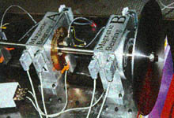
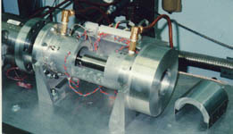

|
Yrd.
Doç. Dr. Abdulkadir Güllü
Gürcan Samtaþ (son sýnýf öðr.)
Gazi Üniv. Teknik Eðitim Fak., / Makine Eðitimi /
Talaþlý Üretim Öðretmenliði Böl.
Haziran 2000, Ankara
1
- GÝRÝÞ
1.1.
Ýlk Manyetik Yatak Tasarýmý
Calgary
þehrinin 110 km. doðusundaki Alta adlý küçük yerleþim biriminde,
Doðu Kanada'nýn doðal gaz kaynaðý üzerinde küçük bir grup
bina yeralýr. Ahýr büyüklüðünde bir yapý içersinde 1400 beygir
gücündeki jet motorunun saðýr edici sesi, günde 3 milyar lt3
doðal gazý doðuya uzanan yüzlerce km'lik boru hattý boyunca
gönderen yakýnlarýndaki bir santrifüj gaz kompresörünü tahrik
ederken hissedilebilir, ayný zamanda duyulabilir de.
Burada kullanýlan güç korkutucu olmakla beraber, yapýlan iþin
büyüklüðü göz önüne alýndýðýnda þaþýrtýcý gelmektedir. Ancak,
Nova Corporation of Alberta tarafýndan iþletilen Hussar Gaz
Kompresörü Ýstasyonu'nda kaba kuvvetten daha fazla iþ baþýndadýr.
Söz konusu olan þey bir zamanlar mekanizmalarýn ve makine
mühendisliðinin etkileyici bir örneði iken, sýradan elektrik
motorunkine benzer bir sistemle deðiþtirilerek günümüzün büyük
kompresör, jeneratör ve diðer döner elemanlý cihazlarýnýn
tasarýmýný köklü biçimde deðiþtirmeye aday bir düzenlemedir.
Beþ
sene önce bu tesisteki manzara tamamen farklý ama, benzer
cihazlarla uðraþanlara da çok tanýdýk görünmekteydi. Jet motoruna
ilaveten güç türbini, gaz kompresörü ve bunlarý birbirine
baðlayan güç hattý eldeki boþ alanýn %50'sini iþgal eden pompa
ve borulardan oluþan bir yýlan yuvasýný andýrýyordu. Dakikada
176 galon yaðlayýcý debisi ise dönmekte olan þaftýn çýktýðý
kompresör muhafazasý üzerindeki açýklýktan doðalgaz kaçýþýný
engelleyen yaðlý sýzdýrmazlýk sisteminin bir parçasý olarak
çok daha yüksek 1000 psig basýnçlara pompalamak zorundaydý.
Yaðlama
ve sýzdýrmazlýk ile ilgili problemler çok sayýdaydý ve bunlarýn
çoðu duraklama süreçlerine sebepti. Pompalar, fanlar ve diðer
elemanlarýn tümü düzenli bakým gerektiriyordu. Temizlik ve
programlý bakým iþleri için yapýlan duraklamalarýn sayýsý,
beklenmeyen arýzalarýn sayýsýna eþitti. Firma tarafýndan 1970'lerin
baþýnda yürütülen bilimsel çalýþmalar, kompresörlerin iþlememe
süresinin %80'inin yaðlama ve yaðlý sýzdýrmazlýk sistemlerinin
problemleriyle ilgili olduðunu gösteriyordu. Sýkýntý ve bakým
masraflarýnýn ötesinde, yüksek sýcaklýktaki bir ortamda parlayýcý
sývý kullanýlmasýyla ortaya çýkan bir risk olarak, her zaman
geçerli bir yaðlayýcý yangýný tehdidi vardý. Boru hattýnýn
yaðlayýcý yangýný ile kirlenmesi de ayrý bir sorundu. Bu,
gaz akýþýný zamanla %5 kadar sýnýrlayabilir, hat boyunca yeralan
iþleme ve ölçüm cihazlarýný çalýþtýrmayacak þekilde kaplayabiliyordu.
1978'de
Nova, yaðlayýcý sistemleriyle beraber manifold problemlerine
de çözümler aramaya baþladý. Kompresörün yaðlý sýzdýrmazlýk
sistemine, mekanik kuru salmastra ile çabucak bir alternatif
bulundu. Mekanik kuru salmastra, pozitif basýnçla sýkýþtýrýlmýþ
gazý kullanarak hem rotor etrafýndaki doðalgaz sýzýntýlarýný
durduran hem de salmastranýn dönen ve sabit parçalarýný bir
diðerinden ayrý tutarak aþýnma ve yýrtýnmayý önleyen orijinal
cihazdý. Firma bunlarý, gaz kompresörlerine monte etmeye 1980'de
baþladý.
Kompresör
salmastrasý yaðlayýcý sisteminin sadece küçük bir parçasý
idi. Hussar'daki pompalarýn, soðutma fanlarýnýn ve valflerin
karmaþýk dizileri, kompresörün yaklaþýk iki tonluk þaftýný
ve türbinin yaklaþýk 1ton'luk rotorunu yaðlamak ve soðutmak
üzere yerinde býrakýlmýþtý.
1982'de
Nova, Fransýz üreticisi Societe de Mehanique Magnetique (S2M)
tarafýndan geliþtirilen yeni bir sistem olan Aktif Manyetik
Yataklar'ý keþfetti. Bir prototipinin konstrüksiyonu ve baþarýlý
iþletiminin ardýnda Nova, 1985'in sonlarýna doðru dünyanýn
ilk yaðlayýcýsýz kompresörünü Hussar'a uyguladý. Daha sonraki
birkaç sene boyunca firma, geriye kalan 38 istasyonunun çoðundaki
kompresörleri yenilemek için azimli bir program yürüttü.
Bir þaftý havada asýlý tutmak bir þey, onu hareket halinde
kontrol etmek çok daha baþka bir þeydir. Hussar kompresöründe
bu, 5200 dev/dak ile dönen yaklaþýk 1, 5 ton'luk çelik þaftýn
kendisinden sadece 0.01inch uzaklýktaki yüzeylerle temas etmesini
önlemek demektir.
Hussar'daki
kompresör revizyonuna reðmen, yaðlayýcý sistemi güç türbinine
hizmet vermesi için kaldýrýlmamýþtý. Aslýnda, oraya da manyetik
yataklarýn montajýna karar verilmiþti. Nova mühendisleri için
bu dönüþümün baþlýca zorluðu; yatak bobin sargýlarý ile pozisyon
sensörlerinin de içinde bulunduðu birkaç elektronik elemanýn
2300C 'lik ortam çalýþma sýcaklýðýna da yanmasý gerekliydi.
Nova, bu zorlu þartlar altýnda çalýþabilecek elektriksel ve
diðer elemanlarý bulabilmek için Virginia, Rodford'da bulunan
Actidyne Magnetic Bearings'in Kuzey Amerika bölgesi lisans
sahibi Magnetic Bearings Inc. ile yakýn çalýþmalarda bulundu.
Türbin dönüþümlerini yöneten Nova makine mühendisi Warren
Grosdal; bu noktada insanlar sadece yüksek sýcaklýk sebebiyle
zaman içinde bir reaksiyon türbinine manyetik yatak teknolojisini
uygulayabileceðimize þüphe ile baktý; diyordu.
Ortamýn verdiði zorluða ilaveten, kompresör dönüþümü sýrasýnda
karþýlaþýlmayan bir baþka sýkýntý da türbinde ortaya çýktý.
Türbin þaftý bir ucunda diðer ucuna çok daha aðýrdý. Bu, gazlarýn
jet motorundan gelerek içersinden geçerken geniþlediði, þaftýn
dönüþünü saðlayan kanatçýklý diskten kaynaklanmaktaydý. Dolayýsýyla,
bu uçtaki radyal yataklar ekstra yükü kaldýracak þekilde tasarlanmýþtý.
Kanatçýklý disk üzerinde gazlarýn yol açtýðý yanal basýnç
sebebiyle türbinin rotoru, kompresörünkilere oranla çok daha
büyük eksenel veya basýnçlý yataklar ile tespit edilmiþti.
Radyal yataklardan dizayn yönünden farklý ama, prensipte ayný
olmak üzere manyetik yataklar, jet etkisinin oluþturulduðu
yanal kuvvete manyetik olarak karþý koymaktadýrlar.
Yangýn
riskini azaltmanýn, enerjiye açýk kompresör istasyonlarýndan
ve yaðlayýcý sistemin bakým kabusundan kurtulmanýn yanýnda
manyetik yataklar, neredeyse tüm mekanik titreþimi de yok
ederler. Ne kadar iyi tasarlanmýþ ve imal edilmiþ olursa olsun,
dönen parçaya sahip her makine titreþimden kolaylýkla görmeye
açýktýr. Mesela, þafttaki çok küçük hatalar yüksek hýzlardaki
balanssýzlýðýn baþlýca kaynaðý haline gelebilir. Rotor ve
stator kanatçýklarýndaki aerodinamik kuvvetler de titreþime
yol açabilir. Mesela, Grasdal'a göre, 5000 dev/dak ile dönen
6 inch boyundaki þaft üzerinde bulunan 28 gr. aðýrlýðýndaki
malzeme, 60 kg'lýk bir balanssýzlýk kuvveti üretecektir. Aþýnma
ve yýrtýlma titreþime sebep olacak þekilde deðiþtirecektir.
Ýþ,
elektrik cihazlarý sektörüne geldiðinde manyetik yataklar
gerçekleþtirmeyi bekleyen bir teknolojik geliþme olarak karþýmýza
çýkmaktadýr. Döner elemanlý makinelerin birçok türünde gelecek
vaat etmesine raðmen bu teknoloji, on seneyi aþkýn zaman önce
Kuzey Amerika piyasasýna giriþinden beri orada sýnýrlý bir
uygulama alaný bulmuþtur. Ontario' daki Hydra Þirketi'nden,
manyetik yataklar hakkýnda araþtýrmalar yapmýþ olan Tribolist
Ken Brown manyetik yataklarýn; iþletme maliyetlerinin düþürülmesi,
kritik hýzlarýnýn kontrolü ve yangýn riskinin azaltýlmasý
konusundaki potansiyelin yüksek olduðunu söylemiþtir. Özellikle
nükleer sektöründeki sermaye yatýrýmlarýnýn düþmesinin, pompa
ve diðer büyük ekipmanlarýn üreticilerine para harcayarak
ürünlerini tekrar dizayn etmek konusunda ancak cuz' i bir
cesaret verildiðini de eklemiþtir. Tüm bunlara ilave olarak
prototipleri, üretimi ve bahsine gerek bile duyulamayacak
riskli piyasayý da düþünürsek, teknoloji üreticilere neredeyse
itici gelmeye baþlamaktadýr.
Birþeyler
yapmak için harekete geçme konusunda görevin büyük kýsmý bu
orijinal ekipman üreticilerine düþmektedir. Çünkü teknoloji,
bu firmalarýn yeni ürünleri sayesinde, eskileri modernleþtirme
çalýþmalarýnýn saðlandýðýndan daha fazla ekonomi saðlamaktadýr.
Eðer manyetik yataklarý üreten kuruluþlar S2M, Magnetic Bearings
Inc. ve bir avuç þirket maliyetlerini azaltabilirse iþler
daha iyiye gidebilir. Virgina Üniversite'si araþtýrma profesörlerinden,
manyetik yataklar konusunda uzman olan Robert Humpris'e göre,
bir zamanlar S2M tarafýndan baþý çekilen bir rekabetin doðuþu
hem daha düþük fiyatlar hem de daha fazla uygulama alanýna
sahip geniþ bir ürün yelpazesi getirebilirdi.
Yoðunlaþan
çalýþmalar çerçevesinde manyetik yataklarýn bugün geldiði
konumuna baktýðýmýzda, alýþýldýk yataklarýn yerini alacak
gibi gözüküyor. Her nekadar tasarým aþamasýnda çok yoðun bir
çalýþma gerektiriyor ise de, yeni yapýlan çalýþmalar çerçevesinde
sorunlarýn büyük bir kýsmý çözülerek kullanýlma alanlarý geniþletilmiþtir.
1.2.
Genel Olarak
Manyetik
yataklar, diðer yatak sistemlerinden ayrý olarak yatak içine
aldýklarý þaftý havada asýlý tutarlar. Mekaniksel etkilere
maruz kalmadýklarýndan her türlü alanlarda rahatlýkla kullanýlmaya
açýk olan bu sistemlere, elektrik ve mekanik mühendisliðin
birleþimi olarak bakýlmaktadýr. Yataklarda kullanýlan malzeme
ve denge sistemleri için yapýlan analizler mekanik mühendisliði,
yataðý kontrol altýnda tutan ve çalýþmasýný her durumda denetleyen
kontrol sistemlerinin tasarýmýný da elektrik mühendisliðinin
ilgi alanýný oluþturmaktadýr. Genellikle elektrik motorlarýna
benzer bir çalýþma þekline sahiptir.
Elektronik
motorlardaki stator ve rotorlar çoðu zaman bundan daha yüksek
toleranslarda hassas dizayn ve düzgün bakýmla mesafelerini
korurlar. Fakat serbest hareket eden, yataklanmamýþ bir rotor
için bu doðru deðildir. Manyetik yataklar bu hava boþluðunu,
þaft etrafýndaki statoru oluþturan dört adet çeyrek mýknatýsa
verilen akým üzerindeki geliþmiþ elektronik kontrol yardýmýyla
saðlanýr. Dört mýknatýstan sadece üsteki ikisi þaftý çekmek
suretiyle kaldýrýrlar. Fakat, mýknatýslarýn hepsi de þaft
pozisyonunu ayarlamakta, onu konvansiyonel yataklara temas
etmekten inch'in bir kesiri kadar uzak tutmakta rol oynarlar.
Bu konvansiyonel yataklar gücün kapatýlmasý veya arýza durumunda
kullanýlýr. Yatak içi denge durumunu kontrol altýna almak
için de sensörler kullanýlmaktadýr.
Sensörler
aradaki hava boþluðunu gözler ve elektronik kontrollere sinyal
gönderir. Bu sinyaller daha sonra, þaft bu noktadan kayarsa
elektronik kontroller, þaftý manyetik yöntemle pozisyona geri
getirmek için stator çeyrek mýknatýslarýndan birine veya daha
fazlasýna akým göndermek amacýyla güç amplifikatörlerine kumanda
edeceklerdir.
Manyetik
yataklar rijit þekilde monte edilmezler. Aðýrlýk daðýlýmlarýnýn
yönlendirilmesine uygun olarak serbestçe dönerler. Geometrik
eksenleri yerine eylemsizlik eksenleri, etrafýnda döndükleri
eksendir. Sonuç; kendiliðinden saðlanan balanstýr. Buna ek
olarak, þaft üzerine etkileyen tüm aerodinamik kuvvetler stator
mýknatýslarý aracýlýðýyla karþý kuvvet üretilerek ortadan
kaldýrýlabilir. Yataklara giden maksimum akým 50 amper'dir.
Hem 3700 pound' luk kompresör þaftýný hem de 2400 pound'luk
türbin þaftýný kaldýrmak için radyal manyetik yataðýn üst
kýsmýnda yeralan iki adet çeyrek mýknatýsýn her birine 25
Amper yeterlidir. Týpký bir elektrik motoru gibi bobin sargýlarýnýn
sayýsý, tellerin boyutu ve sargý katlarýnýn büyüklüðü manyetik
yataklarda oluþturulan elektromanyetik kuvveti belirler.
Bu yataklar üzerine yapýlan her çalýþma, yataklarýn daha da
ön planda tutulmasýný saðlamaktadýr.
1.3.
Yeni Çalýþmalar
Yýl
1999 - 2000, manyetik yataklar konusunda yapýlan araþtýrmalar
gitgide artmaya baþladý. Ýlk olarak International Magnetic
Bearing Center ismi altýnda bütün manyetik yatak üreticileri
ve araþtýrma yapan üniversiteler toplanarak ileriye dönük
atýlýmlar yapýldý. Günümüzde bu konu hakkýnda araþtýrma yapan
üniversiteler arasýnda Virginia University, MIT University,
Control Systems Laboratory, Department of Electrical Engineering,
Auburn University ve Maryland Üniversity sayabiliriz. Virginia
Üniversitesi manyetik yataklarýn geliþmesi ve yangýnlaþmasý
alanýnda birçok soruya ýþýk tutmuþtur. Bu üniversiteler birçok
kuruluþlarla iþbirliði yapmakta olduðu da gözden kaçmamaktadýr.
Buna, NASA - AVCON iþbirliði ile yapýlan çalýþma ve denemeler
çalýþmalara örnek gösterilebilir. NASA'nýn özellikle turbo-pompa
özellikli gaz türbinlerinde yaptýðý çalýþmalarda istediði
baþarýya ulaþtýðý söylenebilir. Marshall Uzay Havacýlýk Merkezi'nde
uydularýn uçuþ-tekerlerine enerji aktarýmý için kullanacak
olan manyetik yataklar ve bu alanda yapýlan çalýþmalar baþarýyla
yürütülmüþtür. Günümüzde manyetik yataklarýn uygulama alanlarý
yapýlan çalýþmalarla birlikte geliþtirilmeye baþlanmýþ, özellikle
Almanya'da yapýlan hýzlý tren çalýþmalarýnda yataklar baþarýyla
kullanýlarak trene yaklaþýk 320km/h hýz kazandýrýlmýþtýr.
Yapýlan çalýþmalar, bu yatak teknolojisini her geçen gün daha
da geliþtirmektedir.
2 - MANYETÝK YATAK ve ELEMANLARI
2.1.
Manyetik Yatak Nedir?
Manyetik
yatak, þaft ve ekseni etrafýnda boþlukta asýlý kalarak serbest
bir þekilde dönen bir yatak sistemidir (Þekil 2.1).
Hiçbir þekilde mekaniksel sürtünme ve yaðlamaya maruz kalmadýklarýndan
dolayý, sessiz çalýþma temizlik gibi birçok avantajlara sahiptirler.
Manyetik yatak þaftý tam olarak, baþka bir ana tahrik kaynaðý
tarafýndan çevrilmek üzere havada tutar. Asýlý kaldýðý ve
sürtünmesiz olduðundan devir potansiyeli baþ döndürücüdür.

Þekil 2.1. Tasarým Halindeki Manyetik Yatak
Manyetik
yataklarýnýn etkisi, bir bilim kurgu yazarýnýn hayal gücünün
ürünü gibi görünebilirse de, temel fikir çok basittir. Bir
jeneratör, kompresör veya baþka makinenin þaftý üzerine, farklý
konumlarda olacak þekilde ferromanyetik malzemeden iki tane
bilezik sýký geçme olarak baðlanýr ve bunlarýn etrafýna sabit
mýknatýslar yerleþtirilir; þaft bir elektromanyetik alan içinde
havada asýlý kalýr (Þekil 2.2). Bunun tersi de sabit bir mili
çevreleyen döner tambur mümkün olup, daha nadir rastlanýr.
Her durumda mýknatýslar stator ve rotor bir asenkron indüksiyon
motoru gibi çalýþýr. Sadece, dönmek yerine havada asýlý kalýrlar.

Þekil 2.2. Manyetik Yatak (Virginia Üniversitesi Laboratuarý)
|